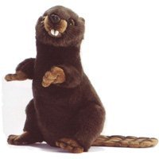
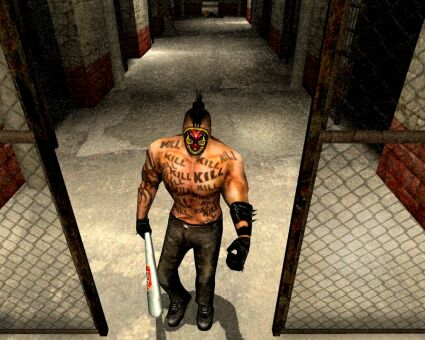
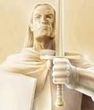
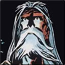

Forums galactiques > Assemblée Galactique : diplomatie officielle > Présentations
Pages : 1 2 ... 13 14 15 ... 31 32
| Kiki le castor Respect diplomatique : 9  09/11 ETU 19:12 | Score : 9 Détails Un petit être poilu à la queue plate entra dans la salle de présentation de l'assemblée. Il s'approcha du pupitre et commenca à y parler en langue castorienne. Voyant que personne ne comprenait son blabla castoresque, il s'interrompit et repris, en langage universel :
"Bien le bonjour tout le monde, je suis Kiki, le gentil castor péruvien. Y a t'il une âme en peine qui ait besoin d'un peu de chaleur ? Kiki le castor est vraiment gentil, vous savez..." Il sortit alors et monta dans son superbe croiseur en bois, taillé à la dent... | ||
| Manhunt Respect diplomatique : 5  10/11 ETU 21:56 | Score : 3 Détails Un vent glacial surprit certains commandant...
..un commandant sortit de l'ombre. Il portait une cagoulle munit d'une batte remplit de sang... ...bien le bonjourrr chèr commandant de la galaxie...HIHI ne vous inquietez pas je suis pas la pour semer la terreur...mais pour stoper la terreur...si jamais elle se présente... Il repartit, son dos etait remplit aussi remplit de tatouage que le corps en entier...qu'est ce que cette chose faisait ici?avait t elle un but? | ||
| Caman Respect diplomatique : 16  10/11 ETU 22:58 | Score : 1 Détails Un être s’avança dans l’assemblée, de taille moyenne il avait l’apparence d’un homme excepter les deux ailes replier qu’il portais dans le dos. Son autres particularité et non des moindre était le faite qu’il restait constamment flou de sorte que l’on ne pouvait distinguer son visage . Il s’approcha du piédestal de l’oratoire et parla en ces termes.
Bonjour noble assemblé je suis caman; autrefois emplie de haine envers le monde et le destin qui met échue je n'aspire maintenant qu'a la paix et a la prospérités. De bête de laboratoire et phénomène de foire l'apocalypse ma rendue empereur d'un peuple que je mépriser. Maintenant je comprends et je pardonne; je pardonne a tous les êtres dont la peur et l'incompréhension pousse a la barbarie et a la violence, et je tenterais par tous les moyen de faire changé la face de cette univers pour qu'il soit plus juste, plus libre, plus tolérant, et que les préjuger cesse de faire parler nos cœur au détriment de la connaissance de l’autre et de l’amour de la vie. Sur ceux noble assemblée je me retire en souhaitant une agréable fin de soirée. L’être quitta la salle et s’en retourna vers son monde. | ||
| Rudrig de Sul'Shara Respect diplomatique : 239  11/11 ETU 18:41 | Score : 15 Détails Le bruit d’un pas pesant résonna dans l’Assemblée, accompagné d’un cliquetis de métal.
« Quand tu n’es pas en danger, pas besoin de te faire discret. Et puis, il vaut mieux cacher ses atouts à l’adversaire, comme dans les jeux de cartes qu’on joue en Saloon. » Il entra dans l’Assemblée, la démarche mesurée, le regard calculateur. Ceux qui connaissent le comparent directement à un de ces fiers cowboys d’un autre temps. Un grand chapeau couvrant ses yeux cristallin ; des vêtements dans les tons bruns, usés cachant un corps qui devait l’être au moins autant, une ceinture métallique qui avait du être de couleur argent, des chaussures renforcés par une lourde protection métallique. Des crosses ressortent de leur étui, de chaque côté de la ceinture. Elles ont l’air finement ouvragées mais malgré un entretient fréquent, on reconnaît des signes d’usure, preuve que les pistolets d’argent ont souvent servis. Il a une main estropiée, deux doigts sont absents depuis longtemps déjà. Son visage est celui de quelqu’un qui a vécu beaucoup de choses, rarement agréables. Les hommes communs lui donneraient la quarantaine. De profondes rides témoignent de son chemin de vie aléatoire, semés d’embûches. Une vie frugale a rendu son visage maigre. Mais le plus captivant est son regard, qu’on dirait millénaire. Il est profond, fascinant. Une sagesse incroyable a l’air de se dissimuler derrière ses pupilles bleu-clair. On dirait qu’il embrasse toute la vérité d’un seul coup d’œil, voyant à travers les mensonges, les murs et les crânes. Il regarde tour à tour les quelques commandants présents ainsi que la configuration de la salle, comme sondant tout ce qui l’entoure. Ensuite, il s’avance pour parler. Sa voix est grave et porte loin, mystérieuse et sage. Bonjour, Origine. Je viens me présenter à toi, il paraît que c’est la coutume dans le coin. Rudrig de Sul’Shara, c’est sous ce nom que je suis le plus connu. Sul’Shara fut ma première patrie. Mais maintenant, cela ne veut plus rien dire… Par une suite d’événements précipités, je me retrouve à la tête d’un monde qui a changé. Je n’ai moi-même pas encore démêlé toutes les causes qui m’amenèrent à ce poste. J’imagine qu’il fallait quelqu’un pour assurer une couverture diplomatique, et dans un monde aussi divisé que le mien, aucun pouvoir n’aurait pu imposer son partisan sans avoir une réaction virulente de la part des autres. Mais comprenant le danger d’être considéré comme une planète « vierge » et d’être annexé par une autre nation, éliminant le pouvoir tant aimé de ses hommes, ils ont décidé de choisir quelqu’un de neutre. J’ai encore du mal à les croire capable de pareil accord alors que tant de haine les habite. Ils ont jugé que j’étais le meilleur pour ce rôle… Je ne sais pas pourquoi j’ai accepté. Certainement à cause du ka, cette puissance que les ignorants nomment destin. Mais le sens du mot ka est bien plus profond. Le ka est une force omniprésente, omnipotente qui dirige le monde. Certains la confondent avec Dieu. Les interactions entre notre monde et cette force sont si complexes qu’il est impossible pour nous de saisir l’ensemble de ces relations. C’est au-delà de l’entendement humain, notre esprit est incapable de comprendre l’énorme complexité de ce concept, les milliards de connections que cette énergie entretient avec nous. Il nous est juste possible d’observer son influence sur nous et notre vie, mais encore faut-il en être capable. Je suis ce qu’on appelle un pistolero par chez moi, et je suis le dernier. Poète, guerrier et philosophe des routes. Un pistolero est un aventurier, un vagabond qui se balade avec la lune comme seule amie. Il eut un moment d’hésitation en prononçant le mot « amie ». Parfois, des compagnons de route nous suivent car nous avons une destination commune, car un pistolero peut être d’une aide non négligeable contre les dangers de la route… Bien Origine, je me suis présenté à toi. J’espère que ma vie en ton sein nous sera profitable à tout les deux. D’après ce que j’ai pu voir, tu es en crise. Mais j’espère que tu vas te relever. Bien, mon devoir accompli, je m’en vais. Il s’en alla, comme d’habitude. HRP : RP inspiré du personnage principal de « La Tour Sombre » de Stephen King. | ||
| Warend Respect diplomatique : 10 12/11 ETU 12:21 | Score : 10 Détails Alors que la Galaxie subit multiples chocs et tournant en ce moment, un petit être s'avança dans la salle des présentations. Cette salle d'une dimension relativement petite comparée à la grande rotonde des débats porte encore les stigmates de l'oppression des Red T. Au centre, une simple estrade ... on sent la simplicité dans la décoration intérieure, seulement quelques portraits des grands Ancien, quelques textes ayant fait leur marque dans l'Histoire ...
Maintenant au centre de la pièce, la petite chose s'apprêta à prendre la parole : "Commandantes, Commandants, mes chers collègue, Je m'adresse aujourd'hui à vous pour vous présenter mes plus sincères salutations. Dans le langage commun je m'appelle Warend. Je suis le représentant d'une nouvelle nation naissante. Cette Galaxie a déjà vécu trop de guerres et trop de malheurs, cette nation montre que la Galaxie peut survivre même après ce qu'elle vient de vivre ... l'espoir renaît. Cependant, comme toutes les nouvelles nations, nous sommes relativement faibles et ne possédons pas la puissance nécessaire pour résister à d'éventuels tueurs de monde. C'est pourquoi, nous recherchons actuellement une coalition qui nous permettrait d'apprendre les arcanes de la vie galactique. Si une ou plusieurs âmes charitables souhaitent nous apporter leur aide, cette dernière sera acceptée avec plaisir. J'espère que notre nation pourra contribuer à la prospérité de cette Galaxie. Nous devons désormais vous laisser pour que nous puissions nous occuper de notre peuple." Après cette introduction, Warend s'en alla et quitta la pièce pour rejoindre sa planète natale ... | ||
| Jenn Respect diplomatique : 67  12/11 ETU 22:11 | Score : 11 Détails Ouverture d'un canal prioritaire.
Bonsoir! Je me présentes, Jenn Blood, dirigeante de la petite République Démocratique d'Octa Prima. Je viens d'arriver au pouvoir sur ma petite planète après de nombreux mois complètements coupés du monde, durant lesquels une horrible guerre civile a ravagé la surface d'Octa Prima. De nombreuses luttes entre les différentes ethnies peuplant la surface de ma chère planète ont conduit au massacre de près de 2 millions de concitoyens. Très vite, deux groupes se sont dégagés démarqués dans cette lutte, les Démons Noirs, populations issues du continent de Kroël, resposables de massacres abominables, de viols de femmes et d'enfants. Et mon camp, les Karmëlien, qui, comme notre nom l'indique, est orignaire du continent de Karmëlie. Nous avons tenté dans un premier temps de stabiliser la situation en Karmëlie, et ce avec succès. Ainsi, la situation sociale et économique s'est nettement améliorée de notre côté, tandis que le continent de Kroël s'enfonçait de plus en plus dans les désastres de la guerre civile. La vigueur économique actuelle sur le continent Karmeliën nous a permis d'augmenter les capcités militaires de l'Armée de Libération Karmëlienne (ALM), notamment en nous équipant d'armes de nouvelles générations. L'ALM (et surtout ses sections aérienne et terrestre), a ainsi acquis une incontestable supériorité sur le continent Kroëlien, ce qui nous a permis d'envisager des actions en Kroël. Depuis quelques semaines, nos divisions ont éradiqué méthodiquement et scrupuleusement toutes les forces ennemies, et aujourd'hui, nous avons éliminé la dernière poche de résistance. Ainsi, nous avons réussi à libérer le continent Kroëlien, et quelques heures après mon retour en Karmëlie, j'ai été autoproclamé Présidente à vie de la République Démocratique d'Octa Prima. Nous aspirons maintenant au développement de notre peuple, et ainsi assurer la grandeur de la RDO. Fin de communication. | ||
| Judayan Respect diplomatique : 527  13/11 ETU 16:40 | Score : 12 Détails C’est de l’amour entre ce guerrier talentueux et une guildienne que naquit la belle Yulée. Celle dont la beauté tourne bien des têtes, le croyait mort il y a bien longtemps dans une guerre qui la vit s’exiler et être adoptée par la caste des guerriers. A cette époque on l’appelait encore Juda…
Les combattants d’une branche malade de l’Alliance qui avait pris part à l’attaque ne l’avait cependant pas achevé. Il était au seuil de la mort et ne dut son salut qu’à la déliquescence morale de médecins et scientifiques de cette faction déplorable… Il survit pendant une longue période, menant une existence de cobaye dont on admirait la remarquable vigueur, la compatibilité de son corps aux greffes, et les divers talents qu’il développait… Cette vie de misère un homme l’en tira : Sayan69. Ce commandant connaissait Yulée depuis l’époque de Planitia où Macastril les avait tous deux conviés. Ils avaient par la suite rejoint l’Empire des Sens dans un même mouvement. Aussi s’appliqua t’il, sans en avertir Yulée, à couper la branche responsable de son malheur. C’est dans ces conditions, que des rumeurs lui parvinrent et qu’il put dénicher Juda. L’homme était brisé psychologiquement et physiquement atteint, Sayan69 mit alors sa fortune et ses compétences technologiques au service de la « reconstruction » globale du grand père de son filleul à naître : Vaiatu. Soigné moralement par la seule perpective des retrouvailles avec Yulée, Juda s’illustra bientôt comme un élève brillant de Sayan69 qui avait investi dans ses membres de quoi se constituer un empire de taille respectable. Une parenté d’esprit se révéla entre les deux hommes qui ambitionnaient tous deux la protection de Yulée et Vaiatu. Aussi Sayan69 qui voyait s’ouvrir peu à peu clairement la route du Nirvana, envisagea l’idée de faire de lui son successeur autant moral que foncier. Ce projet se heurtait cependant à l’appartenance de Juda à la caste des guerriers… Cela était pourtant aisément surmontable pour celui qui aimait désormais Juda comme un père… il en fit son fils ! Il l’adopta et lui donna alors son nom complet de Judayan Il restait peu de temps Sayan69 sentait son ascension désormais imminente, il envoya alors son fils fondé une colonie dans un nouveau système lui permettant de se trouver une capitale qui serait vraiment sienne. Il cèda par ailleurs ses possessions Macastril pour que celui-ci administre ses affaires le temps que Judayan prenne le contrôle d’un natal dans les confins d’Origine et qu’il puisse rétablir les communications avec le reste de la Galaxie. Ce qui est désormais chose faite ! | ||
| Araskel Respect diplomatique : 396  15/11 ETU 17:30 | Score : 5 Détails Un bruit se fit entendre dans l'Assemblée.
Des bottes claquaient dans les couloirs de l'Assemblée. En se concentrant un peu, les commandants pouvaient entendre un groupe massif d'hommes se dirigait vers la porte d'entrée. "HALTE!" Clak clak clak. "Sifirt, Safart, Garat Ohl'y venait avec moi!" La porte de la salle fut ouverte par deux immenses barbares probablement jumeaux, vétu d'une cape cramoisi, de bottes rouges, et d'une robe noire , leurs canons lames passés en bandouliere. Une fois la porte ouverte, les deux soldats se mirent chacun d'un coté de l'encadrement, et se tinrent droit comme une lance. Une homme, vétu entierement de cuir noir depassa les deux soldats, suivit de deux hommes enchassés dans leurs armure integrale d'un noir luisant. Il se dirigea vers l'estrade, s'eclaircit la voix tendit que les deux soldats d'elites se placaient a ses cotés, puis il prit la parole: "Commandants! Commandantes! Je vous salue!" Il marqua une pause, juste le temps de parcourir du regards la piece. "Je me nomme Araskel, ce qui dans la langue de mon peuple signifie "Danseurs lames", bien que je ne sois pas un bretteur émérite. Ancien Red Tribes, fidele a Spleen-Gaijin, j'ai érré longtemps dans le vide galactique, sans buts. Je vient actuellement de prendre le contrôle d'une planete par des moyens pacifiques. Au vu de la sterilité des debats de cette Assemblée, visant a amélioré une constitution qui n'as aucune légitimité, je ne dirais qu'une seule chose sur ce sujet: amusez vous bien. Je suis venu me presentez pour vous faire temoigné ma profonde sympathie, ainsi que mon absence totale de desire d'Hégémonie. Je suis pret a apporté ma pierre a l'édifice, j'en ait même l'envie." Il guetta les reactions des commandants presents. | ||
| Vardenfell Respect diplomatique : 77  15/11 ETU 20:05 | Score : 4 Détails Nouveau commandant de cette galaxie, vardenfell avança d'un pas quelque peu incertain vers le micro...
" Chères commandants" bredonna-t-il," je me nomme Vardenfell, personne autant que vous êtes dans cette assemblée ne me connait, mais je ne compte pas que cela s'éternise. Je viens des provinces de Morrowind et je..." repensant a son pays natal, vardenfell éprouva une grande émotion , ce qui l'empeche de continiuer de parler. Puis, il se ressaisit. "Morrowind donc, fut ma contrée d'origine, mais, sans doute par gout de l'aventure, j'ai souhaité partir a la découverte de la galaxie ORIGINE. C'est comme cela que j'ai été recuté en tant que commandant spatial, dirigeant de la fédération" Le commandant Vardenfell, s'en alla après avoir énoncé la formule d'usage: "chères commandantes, chers commandants, veuillez acceptez l'expression de mes salutations distinguées! " .... | ||
| Rendillion Respect diplomatique : 4 17/11 ETU 18:07 | Score : 4 Détails Un jeune Commandant apparut dans la salle des débats,inhabituellement calme.
Son entrée eut pour but de stopper toutes discussions,tout bruit. Stressé à l'idée de se présenter de la sorte sans préambule aucun,il prit place en face de l'hémicycle et,prenant une grande inspiration, déclara: "Bonjour Commandants, Je me nomme Rendillion,et après un douloureux voyage où bon nombre de mes amis sont morts,je me suis retrouvé sur une planète vierge et inhabitée. En souvenir de cette dûre épreuve, et afin que plus rien de ce genre n'arrive à moi ou a quiconque de mon peuple, nous avons décidé de nommer cette planète Aphrodizia, et allons tout faire pour vivre dans le bonheur le plus total,sans contrainte aucune. Soyez sûr que mon engagement pour cette galaxie ira grandissant. Quand nous aurons appris à manier les éléments déchainés que nous rencontrons actuellement, je reviendrais vers vous afin de m'informer sur la situation géopolitique actuelle. Je met à disposition de tout volontaire mon propre numéro, nous allons avoir besoin d'aide pour bâtir un état fiable et heureux. Merci de votre attention, Rendillion | ||
| White Respect diplomatique : 18  17/11 ETU 20:21 | Score : 6 Détails Un commandant vétu de blanc uniquement arriva dans la grande salle. Il était impressioné par cette salle malgré quelle n'est rien de très impréssionnant. Il avait des cheveux blancs la peau très blanche et des yeux polaire(il avait aussi des dents blanche^^).
Bonjours cher camarades ! Je m'appelle Mike White(mickez ou mikou pour les intimes^^). J'ai eu un petit problème lors de ma naissance. Je suis né avec des muscles d'oiseaux, des muscles blancs. C'est un sacré avantage parce-que les muscles blancs(les miens) sont plus développés que les muscles rouges(noramalement ceux que j'auraient dû avoir). Je suis pas très riche(très pauvre) et n'ai pas beaucoup de vaisseaux pour survivre(persque aucun). J'éspère que je ne vous gâche pas une partie de plaisir, si c'est le cas dites le moi et je errais ce que je puex faire(pas grand chose...). Je vous souhaite une agréable journée galactique. Je vais peut-être ouvrir un magazine galactique pour ceux que ça intéresse(parce que il y en a ?). White | ||
| Forax Respect diplomatique : 15 22/11 ETU 16:35 | Score : 9 Détails *Un autre commandant s'avance, taille moyenne, une ou deux cicatrices sur le visage, ses lèvres figées en un léger sourire désabusé qui colle parfaitement avec son regard légèrement voilé de tristesse. Ses habits un peu usés sont...quelconques, sans aucun signe distinctif indiquant son statut de commandant*
S'lut à tous. J'suis l'c'mandant d'TauCeti Central. D'ailleurs j'suis né sur c'te p'nète, d'la ca'p'tale. En fait, l'truc ma'n'tique là a f'tu l'boxon s'toute l'p'nète. C't'ait pas beau à voir: guerre c'vile, pi'age, pu d'gouv'ment...T'l'monde s'blait avoir p'du l'raison. Alors j'ai r'ni ma bande (les g'tans d'quartier central), on s'armé c'me on a pu et on a l'cé l'ssaut sur c'qui'stait du gouv'ment. J'ai p'du p'mal d'frères, mais on a g'gné. J'vous cach'pas qu'si on a l'cé l'ssaut c'car on s'vait p'sieurs bandes r'vales d'quartier nord s'taient alliées pou'fai'l'coup. On l'za pris d'v'tesse. Donc v'la, j'pu qu'à s'tir TauC'ti C'tral d'chaos et y a d'boulot. Piquer l'povoir c'tait pas f'cile, mais gouv'ner c'te p'nète c'pas g'gner. Forax, fier gitan et commandant de TauCeti Central | ||
| Amiral Rama Respect diplomatique : 7 22/11 ETU 23:33 | Score : 7 Détails ** Un message holographique grésillant arriva à l'assemblée...Il représentait un homme d'age mur au costume ceintré. Sa coupe était élégante, sa peau basanée et son regard d'acier était soutenu par une moustache on ne peut plus soigneuse... **
Je me présente, je suis l'amiral Rama. j'étais aux commandes d'une flotte qui errait dans l'espace depuis la destruction de notre monde natale, c'est à dire des mois à chercher désepérément une issue notre exode dans le vide intersidéral... Nous l'avons finalement trouvé, il s'agit d'un petite planete en bordure de votre galaxie. Nous sommes soulagé, et pensons prendre un peu de repos pour rebâtir notre civilisation... Nous sommes néanmoin prêt à rentrer en contact avec qui se présentera à nous dans des intentions pacifiques et coopérative... Dans l'espoire que ce message vous parvienne. Mes Respects exellences... Amiral Rama, représentant des Arcturiens. | ||
| Jeroboam Secundo Respect diplomatique : 5 26/11 ETU 01:31 | Score : 5 Détails **L'ecran intercomm se mit a gresiller, au debut il s'emplit de neige et un leger larsen s'entendit, puis apres de laborieux reglages la qualité de l'image et du son s'ameliora. Un homme à l'allure seche et hautaine apparut sur l'ecran et il commença son discours;
"Mesdames et Messieurs les Commandants, je me permet d'interrompre vos conversations pour me presenter a vous, je suis le commandant Jeroboam Secundo. Mon peuple et moi venons tout juste de nous installer quelque part dans la galaxie, la flotte nous ayant aidée a sauver nos vies ne nous permettant plus de vivre dans l'errance du fait de sa vetusté. C'est avec joie que je constate que nous ne sommes pas les seuls a avoir survecu à la terrible catastrophe, je serais enchanté de pouvoir echanger avec vous lorsque notre installation sur Adelia Prima sera plus organisée, et pourquoi pas de vous y recevoir lorsque les conditions de vie y seront plus descentes. J'ose esperer que ce sera là le point de depart d'une collaboration fructueuse pour chacun de nous et qu'a l'avenir..." **le flot de ses mots se perdit progressivement et l'ecran se brouilla de plus en plus jusqu'a ce que la silhouette disparaisse completement et que l'ecran se coupe, replongeant la salle dans la demi penombre dont l'allocution du commandant Jeroboam Secundo l'avait tirée** | ||
| Groochie Respect diplomatique : 709  28/11 ETU 20:47 | Score : 3 Détails "Un homme avec un visage de chat et haut de deux metres s'avança dans la salle"
Bonjour, je me presente,je suis le Baron Groochie Von Liechtenstein.Je suis née avec une anomalie,mon visage étant celui d'un chat,mais tous cela est compansé par ma force hors du commun. Je suis depuis peu a la tete de la planete Zebulion-01 grace a un coup d'etat que j'ai orchestrer. | ||
| Selmy Respect diplomatique : 4  30/11 ETU 16:29 | Score : 4 Détails une visio-communication venait d'apparaitre a l'assemblée, on pouvait y voir un vieux vaisseaux passablement delabré mais dont la capacité de transport était pour le moins assez impressionante!
au devant se tenait un homme assez grand pale au cheveux blanc mais qui ne trahissait aucune vieillesse aparente il etait vetue entierement de blanc. en arriere plan se distinguait le poste de douane de l'assemblée et de toute evidence les douaniers se frottaient les mains quant a l'idée d'inventorier ce qui devait se trouver dans le vaisseaux... -chers commandants je suis navré de me presenter a vous de la sorte mais en ma qualité de marchand je ne me deplace jamais sans tout un tas de fourbis..et je crois que je suis tombé sur un os.. il jetta un regard mauvais a l'adresse du chef des douaniers tout en se demandant si finalement une petit ristourne ne lui ferait pas oublier qu'il avait d'autres affaires.. bon navré je vais finir mes affaires mais sachez que je suis honnoré de me presenter a vous et que je serais ravis de vous servir... | ||
| Olga Respect diplomatique : 25  01/12 ETU 21:20 | Score : 9 Détails Un étrange convoi pénétra dans la salle des présentations. Une grosse femme aux habits plus que démodés était assise sur un fauteuil antique transporté sur le dos de quatre caricatures d'humains, aux membres déformés et aux visages inexpressifs. Elle avait un cigare à la main, et regardait ce qui l'entourait avec un détachement méprisant. Sur ses genoux, un chat gris se vautrait dans sa robe. Curieusement, il semblait y avoir une expression - presque humaine - de profonde satisfaction dans sa manière d'être. Un jeune homme excessivement maigre, habillé également du dernier cri en matière d'antiquités, précédait les porteurs de quelques pas.
Arrivés au milieu de la pièce, les porteurs déposèrent le fauteuil à terre, et s'agenouillèrent derrière lui, la tête basse. Le jeune homme se plaça à côté du fauteil, debout, et s'éclaircit la voix. "Commandants, je suis ici pour vous informer du désir de connaissance mutuelle qu'éprouve en ce moment même Sa Très Grâcieuse Et Magnifique Majesté la Reine Olga, souveraine parmi les reines sur Dabrunicht. Moi, Heinrich, serai le porte-parole de Sa Beauté Suprême Olga dans cette assemblée, lorsque celle-ci ne désirera pas prendre la parole elle-même pour des raisons de préservation de sa santé vocale. Son Incomparable Majestuosité désire vous adresser la parole, et désire de fait être entendue, écoutée, et comprise." Il se recule d'un pas et se tait. La femme, la reine Olga, regarde l'assemblée pendant un long moment avant d'émettre un son. "Hurps!" Le jeune homme se relève précipitamment et crie en direction de la porte par laquelle ils étaient entrés. "Hola, misérables cloportes, Sa Volumique Majesté a le hoquet! Qu'on lui apporte de la bière!" "Hurps!" Une douzaine de personnes habillées de rouge entrent dans la salle en courant. L'un d'entre eux transporte un gigantesque entonnoir, et tous les autres ont chacun à la main un seau rempli de bière. Ils se dirigent vers la reine Olga. L'homme à l'entonnnoir lui enfourne l'objet dans la bouche sans ménagement. Les autres passent l'un après l'autre devant elle pour verser leur seau de bière dans l'entonnoir. La reine boit à une vitesse incroyable. Lorsque tous les seaux sont vides, l'entonnoir est retiré du gosier royal, et tous repartent en courant vers l'endroit d'où ils sont venus. La reine rota longuement. Le jeune homme, qui a regardé la scène impassible, s'avance de nouveau. "Sa Quasi-Divinité Olga désire vous adresser une seconde fois la parole." La reine, cette fois, ne perd pas de temps. Elle se met à parler immédiatement. "Je m'adresse à vous aujourd'hui pour vous informer de la récente ouverture de la planète Dabrunicht aux communications galactiques. Il est vrai que le "Rat Dit Ho!" est un moyen incroyablement plus efficace pour communiquer que les messages transportés à cheval. Je suis heureuse d'avoir apporté à mes serfs une telle invention. Je veux que vous soyez informés de ma présence dorénavant régulière dans votre assemblée. Si certains d'entre vous ressentent le besoin de me parler, qu'ils passent par ce mécréant d'Heinrich. Si certains d'entre vous ressentent le besoin de m'aduler pour une raison ou pour une autre, ils pourront éventuellement faire l'objet d'une invitation à me parler en privé dans mes appartements. Toute attirance sexuelle sera traitée en priorité. Si certains d'entre vous ressentent le besoin de caresser mon chat, qu'ils crèvent." Sur un geste d'Heinrich, les porteurs se relèvent, et le convoi ressort lentement de la salle. "Hurps!" "Immondes fainéants, qu'on offre de la bière à Sa Grosseur!" | ||
| nelson Respect diplomatique : 5  03/12 ETU 17:51 | Score : 4 Détails Un nouvel arrivant arriva et toutes les conversations s’arrêtèrent. En effet l’apparence du nouveau venu était quelque peut déroutante. Son visage était tout à fait carré, ses épaules paraissaient cubiques à souhait et ses jambes ressemblaient à 2 piliers de bétons.
Il se présenta comme étant le commandant - Amiral représentant la terre anguleuse. Son peuple, accablé par la faiblesse de sa planète l’avait réveillé de l’état de stase artificiel, dans lequel il avait été plongé jadis, dans le but de redevenir une grande puissance. Pour mettre les points sur les i, il a tenu à assurer que sa force militaire, qu’il savait manier avec finesse, ne serais pas obligatoirement son outil principal car ce qu’il voulait était avant tout la conquête de la reconnaissance plutôt que l’annihilation de tout vie. Son ton laissait tout de même à supposer sa volonté de ne pas se laisser faire. Il précisa, en dernier lieu, qu’il était quelqu’un de simple, peut avare de manière et que si son titre définis par sa nation était celui « d’amiral de flotte Nelson », il accordais, à ses amis le droit de l’appeler rubicube mais certainement pas cap’tain igloo. Et, c’est sur un discours tout aussi carré que sa personne qu’il s’en alla droit devant lui pour récupérer son vaisseau personnel « le galion » | ||
| Thavius Respect diplomatique : 6  06/12 ETU 01:46 | Score : 2 Détails *Un homme quelque peu âgé entre dans la pièce. Une longue barbe grise, le visage fermé et dur. D'un bref coup d'oeil, il balaie l'assemblée du regard avant de se diriger vers un groupe de personnages aux allures diverses et variées en pleine discussion. Tendant l'oreille, il perçoit quelque bribes de conversation. Profitant d'un silence, il toussote légèrement avant de se présenter brièvement:*
"On me nomme Thavius. Commandant de la planète Bebop. Récemment arrivé à la tête du pouvoir. Pour le reste,...." *Détournant son regard, il tourne les talons pour se diriger vers le fond de la pièce où semblait l'attendre un sobre mobilier: une table ainsi qu'une chaise tout ce qu'il y a de plus banales.* | ||
| Pétruc Respect diplomatique : 3 07/12 ETU 15:26 | Score : 0 Détails Bien le bonjour, vous voulez me lyncher mais j'en ai rien a foutre, car je suis le grand pétruc, je fais beaucoup de fautes car je ne suis pas tailler pour ètre dèrière un bureau mais pour la guerre.
|
Pages : 1 2 ... 13 14 15 ... 31 32
Forums galactiques > Assemblée Galactique : diplomatie officielle > Présentations